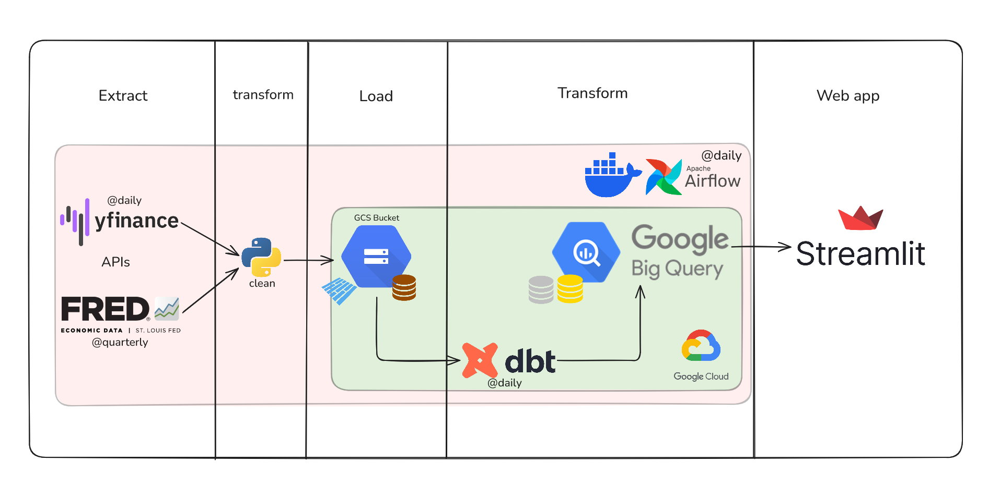

about_me
// who I am
Data engineer with a background in BI and analytics, now focused on building the infrastructure that makes data actually useful. I like clean architecture, scalable pipelines, and systems that still make sense at 3am. Currently based in Berlin, always looking for the next interesting data problem to solve.
// what I focus on
I build data pipelines and analytics systems that are reliable, readable, and built to last. Clean transformations in dbt. Well-orchestrated workflows in Airflow. Data that makes sense by the time it reaches the people who need it. I care about the whole journey, from raw source to analytics-ready dataset. Not just making it work, but making it maintainable.
featured_projects

End-to-end financial data platform: Yahoo Finance and FRED data ingestion into GCS, BigQuery warehousing with dbt transforms, and a Streamlit analytics dashboard. Built during final project week of data engineering bootcamp.
tech_stack
ingestion
transformation
orchestration
storage
infrastructure
languages
work_experience
- Built and maintained ETL pipelines consolidating ~2M rows from SAP, Salesforce, SQL and CSV sources into a unified analytics layer, reducing data prep time by ~30%.
- Developed 7+ KPI dashboards in CRM Analytics and Salesforce Reporting for Management, Finance, and Sales.
- Defined data structuring standards and ETL norms and trained 1–3 users on CRM Analytics, cutting ad-hoc requests by ~40%.
- Implemented Xentral and Haufe X360 (Acumatica) ERP for 5+ SME retail clients.
- Built Make (Integromat) automation workflows for an integration between ERP and DHL portal saving ~8 hrs/week per client.
- Extracted and validated data via SQL queries and REST APIs across multiple client environments.